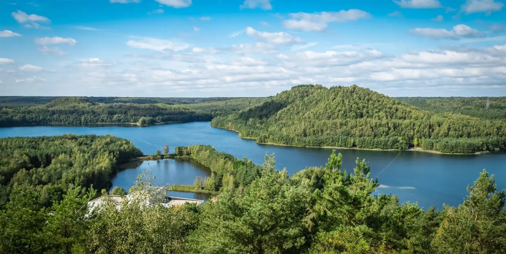

Poort bij huis
Dennen, heide en waterplassen beginnen tegenover Terboekt 28. Korte wandelingen zonder de auto.
Wandelen en fietsen vanaf de toegangspoort in Genk.
Home Terboekt ligt tegenover de toegangspoort van Nationaal Park Hoge Kempen. Trek uw wandelschoenen aan en u bent in het park.

Korte lus voor het ontbijt of een dag knooppunten naar As, Zutendaal of Terhills. Daarna terug in huis: keuken, vier kamers en in seizoen het zwembad.
Het park is de voortuin. Cultuur en steden staan op Bezoek Genk.
Dennen, heide en waterplassen beginnen tegenover Terboekt 28. Korte wandelingen zonder de auto.
Buurgemeente en toegangspoort Lieteberg: blotevoetenpad, insecten- en vlindertuin, Grot van Wiemesmeer, Papendaalheide.
Station As als startpunt van routes, uitkijktoren van 31 meter in de vorm van een boortoren, miniboemeltrein in de weekends.
Terrils, azuurblauwe meren en shoppen in Maasmechelen Village. Een andere gezicht van hetzelfde parklandschap.
Parkinfo: nationaalparkhogekempen.be.
Geen camping verderop. Vier kamers, keuken, wifi. Tarieven op prijzen, een weekendje weg via boeken.
Vraag een verblijf aan aan de poort van het Nationaal Park.